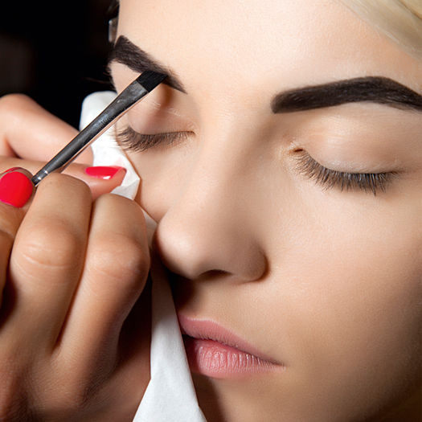

Сделайте себе приятный подарок
и порадуйте своих близких!
Что из себя представляет микроблейдинг бровей?
Микроблейдинг еще называют биотатуажем или мануальным татуажем. В отличие от стандартной процедуры он выполняется вручную без применения машинки. Сама процедура представляет собой введение под кожу специального пигмента, который сохраняет свой цвет на какое-то время. Краситель вводится под кожу с помощью тоненькой иглы.
Микроблейдинг проходит в два этапа. В первый раз наносится пигмент, поверх которого образуется корочка. Через некоторое время она отпадет, и в порах останется только часть пигмента. Цвет бровей меняется частично, поэтому через месяц необходима коррекция. Она позволяет добиться желаемого результата. После снова возникнет корочка, но результат сохранятся надолго.
Коррекция при такой методике является обязательной! Потому, что на коррекции дорабатываются все нюансы, если они есть. И происходит закрепление результата для длительности носки бровей.
Коррекция при такой методике является обязательной! Потому, что на коррекции дорабатываются все нюансы, если они есть. И происходит закрепление результата для длительности носки бровей.
Коррекция при такой методике является обязательной! Потому, что на коррекции дорабатываются все нюансы, если они есть. И происходит закрепление результата для длительности носки бровей.
Коррекция при такой методике является обязательной! Потому, что на коррекции дорабатываются все нюансы, если они есть. И происходит закрепление результата для длительности носки бровей.
Коррекция при такой методике является обязательной! Потому, что на коррекции дорабатываются все нюансы, если они есть. И происходит закрепление результата для длительности носки бровей.
Коррекция при такой методике является обязательной! Потому, что на коррекции дорабатываются все нюансы, если они есть. И происходит закрепление результата для длительности носки бровей.
Преимущества
микроблейдинга бровей
Брови выглядят очень натурально, так как данная техника позволяет учесть все особенности роста волосков
Эффект от процедуры сохраняется до 1,5 лет без перехода цвета, как при классическом татуаже
Вы можете вести свой привычный образ жизни сразу после процедуры, т.к. в 90% случаев не образуется отека
Микроблейдинг бровей в большинстве случаев совершенно безболезнен, пигменты не вызывают аллергии


{kind=link}
Стоимость
- Микроблейдинг бровей - 100 руб.
- Коррекция (через 1-2 месяца) - 50 руб.
- Коррекция работы другого мастера - 100 руб.
Мастер подбирает форму бровей, цвет и технику выполнения процедуры индивидуально, исходя из особенностей формы лица, структуры кожи и ваших пожеланий!
Мы предлагаем лучшие цены на микроблейдинг бровей в Бресте, вкупе с отличным качеством исполнения!